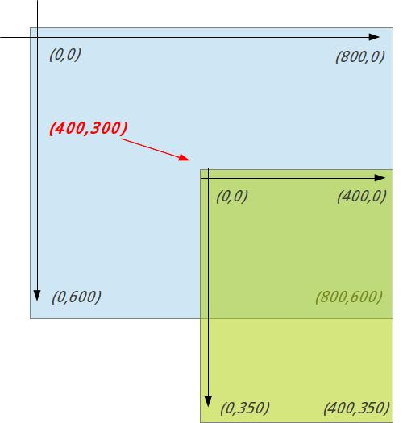
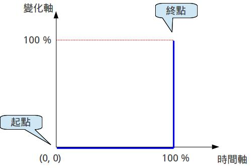

也紀念我們永遠的朋友 李士傑先生（Shih-Chieh Ilya Li）。
《雪凡與好朋友們的 Ren'Py 遊戲引擎初學心得提示》第六回：Displayable 與動畫轉置語言
嗨！大家好！感謝大家觀賞本回的《雪凡與好朋友們的 Ren'Py 遊戲引擎初學心得提示》。我是雪凡。
今天的主題，是華麗麗的圖片與動畫特效。
 「因為有很多的文字需要應付，所以本回的助手就是我了。我是泰克斯 (text)。」
「因為有很多的文字需要應付，所以本回的助手就是我了。我是泰克斯 (text)。」
咦？很多文字嗎？本回的重點應該是圖片才對吧？你在說什麼啊？
 「你才是在說什麼......用來操作圖片的 Displayable 實體，以及 ATL 動畫轉置語言，不管那一項都是被程式碼給團團包圍的東西。Ren'Py 官網的說明頁面可是寫了長長一大落......不要裝傻！」
「你才是在說什麼......用來操作圖片的 Displayable 實體，以及 ATL 動畫轉置語言，不管那一項都是被程式碼給團團包圍的東西。Ren'Py 官網的說明頁面可是寫了長長一大落......不要裝傻！」
原、原來如此......這麼說來也是。想要讓華麗的圖片與動畫乖乖工作，仔細一想還真是少不了文字的幫助啊......
「......你應該是在裝傻吧？」
當、當然！那還用說嗎？我可是有預習的。總、總、總而言之！華麗麗的圖片與動畫，是給玩家玩遊戲時享受的，至於我們這些遊戲製作者，只要以感恩的心，努力發揮遊戲製作者的天賦......
「......提問：遊戲製作者的天賦是什麼？」
那、那個、就是那個嘛......那個，你知道的，就是......
「是什麼呢？」
大概是......M......？......之類的？
「......」
那種眼神是怎樣，不要用那種眼神看我！
「抱歉，各位觀眾朋友，看來今天好像只有我了。」
喂！喂喂！等等......我只是早上還沒完全睡醒而已。再給我一次機會......呃，遊戲製作者所需要的東西，果然是「毅力、根性以及熱情」對吧。
「還有技術啊！」
呃，那是當然。不過技術什麼的，就由本節目來為您介紹吧。
讓我們一起進入本回正題！
「正是如此！」
螢幕上的圖片定位法
剛開始時大家精神正好，先補完一些簡單的圖片定位與螢幕座標小常識。
螢幕上的座標
如果各位年齡夠大，學過初中數學，想來還記得平面直角座標這回事。

▲ 圖1：數學課中常見的標凖平面座標系統。x 軸從左到右遞增，y 軸從下到上遞增；原點位置在中間的 (0,0) 處。看狀況不同，有時也會略去負數部份，將原點直接畫在左下角。
在電腦螢幕上座標系統也是雷同，唯一的差異在於，螢幕的 y 軸是由上到下遞增的；因此，座標系的原點 (0,0) 也被擺到了左上角。正如下圖這般......
▲ 圖2：螢幕座標系統示意圖。以 800x600 螢幕做為範例。
y 軸反過來很奇怪嗎？
然而這種平面座標形式，倒不是 Ren'Py 自行規定的，而是全世界的電腦程式都是這樣。不管 Linux 或 Windows，Direct X 還是 Gimp......全部都一樣，幾乎沒有例外。也算是一種業界標準吧。
除了螢幕以外，圖片座標也是用同樣方式定義的：
▲ 圖3：圖片座標系統示意圖。以 400x350 螢幕做為範例。
結合「螢幕」與「圖片」這兩套座標系統，我們可以動手把圖片放到螢幕上面。比方說，將圖片放到螢幕的 (200,50) 位置上......
▲ 圖4：將圖片放在螢幕的 (200,50) 位置之示意圖。圖片的原點，會自動錨定在指定的座標點上。
發明這一切的傢伙看著一切所造的都甚好，圖片可以順利定位、貼到螢幕上，這就凖備去幹些別的去了。
不過偏偏有人這時問了：
「我想要將圖片置中，或是貼齊右下角，怎麼辦？」

▲ 圖5：想讓圖片置中時，試著直接指定螢幕正中央的座標 (400,300) ......但這顯然不對！光原點置中有什麼用啊！
學院派的同學可能馬上想要試著推導公式，這種做法當然沒錯。
以置中來說，很快就能看出，要指定的座標應為：

......不過，果然還是算了吧！難道您真打算每次想要對齊哪裡時，都用手來算、來推導公式嗎？
雖然在某些低階遊戲引擎中您還真非手算不可，但在 Ren'Py 中倒不必如此。
為了處理這個小麻煩，我們得引進「錨點 (anchor)」的概念。
【低階與高階的遊戲引擎】這裡的高階與低階，並不是好或差的意思。而是指「與人類間的距離」。
－－這麼說吧，越高階的引擎，他的運作方式就會越與人類的想法相近（會去配合人類）；反之，低階的遊戲引擎則不那麼去重視人類的想法，而是去配合、適應電腦內部的實際運作狀況。
這表示引擎越高階，就越容易被我們操縱；反之越低階，功能往往越強，彈性也會高，速度也會快，但也需要不少基礎知識，與好幾年的研究才能精通。
在各種遊戲引擎中，Ren'Py 算是比較高階的引擎。不過也請注意，低階與高階都是相對性的，只有在互相比較時才有意義。
錨點 = 黏合點
所謂的錨點，是指「位於圖片座標系統中的一個座標點」，當圖片要定位時，這個座標點－－僅僅一個小點－－就能代表整張圖片所在的位置
......這麼說好像挺複雜的，但其實我們早已用過以上的概念。記得嗎？前面提過，當我們給圖片指定一個座標時，圖片的原點就會與我們給定的座標點重合－－這表示那時我們正把「原點」當成「圖片的錨點」在用！
▲ 圖6：預設狀態下，錨點的位置在圖片左上角的原點處。另外還請注意此處只是示意圖，錨點實際上是看不到的。
但說到底，「以原點為錨點」僅僅只是 Ren'Py 的預設值，我們也可以把錨點設在圖片的其他位置上。
▲ 圖7：將錨點設於圖片正中央－－(200,175)－－的示意圖。請留意一件事：錨點是設在圖片上的，而不是設在螢幕上，這非常重要。
在 Ren'Py 中，設定錨點有很多方法，比方說我們稍後會提到的 ATL 動畫轉置語言，或是在宣告圖片時指定等等......嗯！具體要怎麼做，等會兒再說。
▲ 圖8：和圖5 指定了相同的顯示座標 (400,300)，但實際顯示結果，卻因錨點 (anchor) 位置不同而大不相同。請留意圖上的錨點位置，會和指定的座標位置相重合（圖5 也是如此）。
很顯然，有了錨點作為圖片座標系統的擴充後，我們就能輕易實作各種圖片的對齊效果了！......比方說，想把圖片對齊到右下角，只要將錨點設在圖片的右下角 (400, 350)，再將圖片移到螢幕的右下角位置 (800, 600) 上，就能完成對齊......整套操作一目了然，不用再導公式了！
錨點與螢幕座標畢竟是比較抽象的話題，如果您無論如何都看不明白咱在這長篇大論地說些什麼，也可以去官方的 Tutorial Game 中找愛琳(Elieen)教授上上課。請在官方 Tutorial Game 的課程選單中，選擇 "Screen Positions" 這一項就可欣賞。
－－噢，小心，愛琳教授是會考試的。
Displayable
在 Ren'Py 中，有不少和圖片看似雷同、可被顯示在螢幕上......但要說那是圖片，又不太一樣的東西存在。這些可被顯示的東西，含圖片在內，一律被稱為 "Displayable"。而能接受 Displayable 的變數，則稱之為 Displayable 變數。
不用擔心又冒出了新名詞。絕大多數您之前打過交道的，看似是要填入圖片的變數，幾乎都是 Displayable 變數。
舉例來說，options.rpy 檔案中的「主選單圖片設定用參數」：menu_root （第四回時介紹過，還記得嗎？），就是個 Displayable 變數；而用來設定對話框背景的 style.window.background－－這個變數中可以簡單地放入圖片，但我們後來也有將其指定為一個「可自行拉伸的 Frame」－－沒錯，那也是個 Displayable 變數！
Displayable 變數的賦值
像 menuroot 這樣的 Displayable 變數，有以下幾種值可被賦予／指派給他們：
- 包含「.」的字串，如："school.png"
這個字串會被理解為圖片的檔名。Displayable 變數會因此被設為一個 Image。 - 由「#」開頭的字串，如："#AA0000"
理解為網頁色碼。Displayable 會被設為一個 Solid。（Solid 是 Displayable 中的一種，咱們稍後再聊） - 構造為 (red, green ,blue ,alpha) 的管串 (tuple)，如：(211, 31, 161, 255)
這同樣代表填色用的 Solid，不過是換了種表示方式。
管串中每個數字都須在 0 ~ 255 之間，其中 alpha 代表透明度，255 表示完全不透明。 - 其他字串，如："emiya smile"
理解為用 image 語句定義的圖片名稱。 - 由 Displayable 函式產生的 Displayable 物件，如第四回時介紹的 Frame()
以下來段示範：
image window bg = "window_bg.png" # 先定義一張圖片，等會兒示範時會用到...... style.window.background = "window_bg.png" # 指定為 window_bg.png 這張圖片 style.window.background = "#FF000088" # 指定為 紅色 + 50% 半透明 style.window.background = (255, 0, 0, 128) # 同上，指定為 紅色 + 50% 半透明 style.window.background = "window bg" # 指定為 image 那行定義的圖片 style.window.background = Frame(...) # 指定為某個 Frame (... 的部份表示，具體定義細節被我省略了)
Displayable 的類型
光前面提過的就有 Solid、Image、Frame ......可以想見 Displayable 並不只一種......
呃......老實說吧，Displayable 不但不止一種，還不止一類。
「以下略加整理後介紹給各位。請看。」
圖片型 Displayable
圖片型 Displayable 有三大特徵：
- 會在螢幕上佔據一個矩形區域。
其中有些類型的 Displayable，大小會由 Ren'Py 引擎自動設定好－－如 Solid，會自動填滿可顯示範圍。至於另一些，可由遊戲作者手動設定。 - 不會對玩家的輸入（如滑鼠移動等）起反應與互動。
- 圖片型 Displayable 支援所有 Position Style 屬性－－顧名思義是用來設定圖片位置用的－－屬性不少，不忙去背，需要設定時再查表就好了。
具體說來，圖片型 Displayable 有以下幾種：
- Image()
輸入檔名載入圖檔，圖檔可以是 jpg 或 png－－這其實就是各位平時在用的普通圖片。 - Frame()
製作對話框之類的外框圖片專用。
輸入 xborder、yborder，會讓 x 軸邊框部份 xborder 像素範圍內，以及 y 軸邊緣部份 yborder 像素範圍內的圖片，保持正常不改變，但內部的圖則會隨 Frame 的寛高，被動態地拉伸壓扁（如果 tile 為 True 則用「拼貼」取代拉伸）
第四回時有詳細介紹使用方法，忘記的同學請務必回去看看。 - LiveCrop()
切下某張圖片的其中一部份作為本 Displayable 的顯示內容。 - LiveTile()
將某張小圖片作為拼磚的原料，填滿 LiveTile 內所有可顯示的空間。 - Null()
空圖片。空空的啥也沒有，不過可指定大小，也可以作為排版時留空使用。 - Solid()
指定色碼給出純色。 - Text()
將文字視視為圖片來顯示
－－第三章的範例檔案中，最開始處標題畫面的旋轉文字，就是靠這東西做的。
簡單示範一下使用方式：
# 以下兩行意義完全一樣
style.window.background = 'win_background.png'
style.window.background = Image('win_background.png')
# 以下兩行意義完全一樣
style.window.background = Solid('#FF0000')
style.window.background = "#FF0000"
......總而言之，用 Displayable 的類型如 Image，加上括號，並填入適當參數就能將 Displayable 製造出來。
上述圖片型 Displayable 使用說明與可用參數列表，詳見官網此頁，不過 Text 的使用說明則要參看這裡。
動態 Displayable
比圖片型 Displayable 更加抽象的，是動態 Displayable。
動態 Displayable 本身「不會被顯示」，取而代之，它會佔據一般 Displayable 的位置，作為其他 Displayable 的「容器」，並依照各種條件，切換顯示內部的 Displayable......
嗄啊！這到底是在說什麼啊！
「別吐自己的嘈啊。」
嘛啊......為了普適的定義，話居然說得連自己都聽不懂了。
......也罷，反正數量也不多，直接說明了吧。
共分為三種：
- ConditionSwitch
依據 if 條件式來改變顯示內容 - DynamicDisplayable
給定一個 Python 函式，每隔一段時間就執行一次，並用該函式回傳的 Displayable 來顯示。
Python 函式的回傳值，還能控制「隔多久」要重新計算 Displayable 的內容。 - ShowingSwitch
依據當前畫面上某些 displayable 是否有顯示，來變更本 Displayable 的顯示內容。
如果需要的話，官方說明可以在這裡找到。
這比圖片型 Displayable 複雜多了，分項說明如下：
ConditionSwitch
ConditionSwitch 可以用 if 條件式來決定要顯示什麼圖片。
見下：
image 圖片名 = ConditionSwitch(
"能產生真假值的 Python 語句①", 語句①為 True 時要顯示的 Displayable,
"能產生真假值的 Python 語句②", 前方語句均為 False，且語句②為 True 時要顯示的 Displayable,
"能產生真假值的 Python 語句③", 前方語句均為 False，且語句③為 True 時要顯示的 Displayable,
# 以此類推，只要確保參數兩兩成對就好，可以有更多……
"True", "前面全部不符合時，要顯示的 Displayable" # 什麼都不符合時，需要有一個預設值。
)
實際示範使用方式：
image superhero = ConditionSwitch(
"mask == 'blue'", "hero_bluemask.png",
"mask == 'red'", "hero_redmask.png",
"True", "hero_default.png"
)
label start:
$ mask = 'red'
show superhero with dissolve # 此處顯示 hero_redmask.png
"就算角不存在，我的速度也能突破天際。不要小看我啊啊啊啊！！！"
$ mask = 'blue' # superhero 一圖隨變數改變，自動改成顯示 hero_bluemask.png
"那傢伙失控了，大家快阻止他！"
$ mask = 'yellow' # 自動改成顯示 hero_default.png
"阻、阻止不了啊！他可是紅色……呃啊！"
DynamicDisplayable
DynamicDisplayable 可以用自定義的函式，控制要顯示什麼圖片。
自定義的函式格式，如以下所規定：
# 自定義的函式－－這是 python 碼，當然要定義在 python block 中
# return 值需為一個具有兩個元素的 tuple，不明白 tuple 的同學請見第四章的介紹。
def my_func(顯示的秒數, 相同 tag 持續顯示的秒數):
return (要顯示的 Displayable, 下次呼叫本函式應該在幾秒之後)
【自定義函式】 您之前介紹過，函式 (function) 就是將一堆的功能與工作，打包集中起來的一個方法。 不管是 Ren'Py 還是 Python，本身都有提供大量的函式。但這些現成的函式，方便歸方便，郤不可能為我們天馬行空的妄想……特殊要求量身訂製，因此也有需要自己定義／設計函式的時候。
此處不細講函式定義的細節，因為這玩意兒的小邊角實在太多啦，我們只要照虎畫喵地喵喵看就好。反正都是貓科......
泰克斯：「不，就算你這麼堅持也......」
沒問題沒問題！不管是用來做什麼的函式，其格式總是如下：
def 函式名(參數①名稱，參數②名稱, 參數③名稱, ...): # 各參數之間需用 "," 隔開，至於參數數量則可多可少，一個都沒有也可以
# 在函式內部，對參數做各種處理與計算 ...
# 完成計算後將解答返還
return 解答
具體舉一個例子：
# 定義一個計算兩數平均值的函式
def average(A, B):
answer = (A + B)/2
return answer
# 使用
average_result = average(1024, 35212)
以下是一個實際可用的 DynamicDisplayable 範例，定義了一個可顯示在螢幕上的簡單計時器：
# 定義函式：
# 函式名稱怎樣取都可以，這邊簡單取為 timer_func
init python:
def timer_func(show_time, same_tag_show_time):
# 下方三行表示會使用 "Timer: show_time/same_tag_show_time" 的格式來顯示
timer_text = 'Timer: {st:.1f}/{stst:.1f}'.format(
st = show_time,
stst = same_tag_show_time)
return (Text(timer_text), 0.1) # 每隔 0.1 秒更新一次
# 用定義的函式搭配 DynamicDisplayable 來定義圖片
init:
image timer = DynamicDisplayable(timer_func) # 將 timer_func 指定給 DynamicDisplayable
# DynamicDisplayable 定義完成，這就試用看看吧
label start:
show timer at topright # 讓計時器顯示在右上角，兩數均從 0.0 起算
"計時開始"
show timer at topleft # 讓計時器變到左上角去，show_timer 重設為 0.0 但 same_tag_show_time 依然繼續計時
"變更位置"
hide timer
"重設"
show timer at topcenter # 讓計時器顯示在正中央，兩數均從 0.0 起算
"計時再度開始！"
▲ 圖9：剛顯示時，兩者同時計數。
▲ 圖10：沒有 hide 直接重新 show 之後，只有 show_time 被重設。
這些特性要怎麼運用就看您了。
ShowingSwitch
ShowingSwitch 可依據螢幕上當前正在顯示的圖片，來決定 ShowingSwitch 本身要顯示的是什麼。
運用此一特性……舉例來說，我們可以僅僅只指定立繪的表情，就讓側欄圖片 (side image) 的表情也跟著立繪的表情自動改變！這個範例官網本身就有，見此，這邊不重複。
【側欄圖片 (side image)】 側欄圖片是對話框旁邊，用來顯示人物表情的小圖片。如下所示：▲ 圖11：左下角那個就是 side image......哼哼，效果挺不錯的吧。
什麼，您問側欄圖片如何啟動？如何使用？
啊啊......這其實應該是要在第四章聊到的內容，不過當時沒空去講......這邊趕快補完一下！
用範例說明重點，見下：
# ====== 以下內容通常放在 options.rpy 中 =======
init -1 python hide:
# 將對話框內的文字左邊界往右移，以免圖片蓋到文字。
# 這裡調的是 padding，但當然也可以去調整 margin，兩者效果各有不同。
style.window.left_padding = 316
# ====== script.rpy ======
init:
# 定義圖片
image library = "bg/library.png"
image no talk = "char/no_talk.png"
image no soliloquize = "char/no_soliloquize.png"
# side image 宣告時，名字用 side 開頭
image side no talk = "char/side_no_talk.png" # side image 圖片的尺寸是隨意的，預設對齊到左下角
image side no soliloquize = "char/side_no_soliloquize.png"
# 定義說話角色
# Charactor() 的 image 參數，請對照 side image 宣告時用的第二個字節
define no = Character("小諾", image = "no")
# 遊戲從此開始……
label start:
scene library # 顯示背景，
show no talk at right # 如果沒有這行，變更 side image 並不會顯示立繪
# 反之若立繪存在，立繪也會隨 side image 變動而自動變更。
no talk "所以我就說不要隨便邀請那傢伙到家裡來嘛！姊……姊姊！聽我說話啦！妳從已前就是這樣……我、我真的要生氣囉！" # 隨本句對話顯示，side image 會被設為 side no talk
no soliloquize "鳴！就算你這麼說也……" # 隨本句對話顯示，side image 會被設為 side no soliloquize（角色的立繪有顯示的話，會被自動修改為 no soliloquize；反之若畫面上沒有顯示立繪的話，則也不會多事地去顯示它。）
return
滿足了嗎？更詳細的說明請見官網這一頁。 Layout Displayable
這一類型的 Displayable，可用來將多個 Displayable 組合起來，方便畫面佈局使用。在設計 screen 畫面時常常用到。（不過我們還沒聊過 screen......這以後再說！）
共有三種：HBox（水平箱）、VBox（垂直箱）、Fixed（固定佈局）。
HBox 與 VBox
HBox 和 VBox 可以將多個 Displayable，以水平或垂直的方向連續拼裝起來（變得像是一排按鈕列那樣）。用法也很單純。
image pictures v = VBox("image_1.png", "image_2.png", "image_3.png", ...)
image pictures h = HBox("image_1.png", "image_2.png", "image_3.png", ...)
......雖然上面非常老實地進行了示範，但我們通常不會這樣直接用它，而是會透過 screen language 在 screen block 中使用。故這邊不細講，到時候再說。
Fixed
相比 VBox 與 HBox，Fixed 就有彈性多了。
「雖然這和 "Fixed" 的字面意思對照不太起來。」
那個啊......不要在意細節啦！
Fixed （固定佈局）提供了一個虛擬的矩形範圍。其內部的 Displayable，可以在矩形的座標系統中隨意移動自身的位置，又或做做對齊什麼的......沒錯，就如同我們平常會在螢幕座標系統中做的那樣。
image icon corner = Fixed(
Image("icon.png", xalign=0.0, yalign=0.0), # 將一個小 icon 放在 fixed 的座標系統的左上角。
Image("icon.png", xalign=1.0, yalign=0.0) # 將一個小 icon 放在 fixed 的座標系統的右上角。
)
【Fixed 的定位與大小】 既然提到「對齊」，那麼 Fixed 的座標系統，其範圍又是如何呢？
－－或是這樣問吧：Fixed 的左上角與右下角，到底是在（螢幕的）哪裡？
答案是：Fixed 預設會覆蓋全螢幕！
Fixed 的左上角就是螢幕的左上角，Fixed 的右下角就是螢幕的右下角（預設）。Fixed 會佔據全螢 幕，哪怕內容物只是個小小圖示也是如此。
......佔滿全螢幕這點，這有時會給我們帶來一些意料外的麻煩。比方說：想用 Fixed + Image + Solid 替某張去背後的道具圖片，上一些簡單的背景色時，Solid 的顏色不光填滿道具圖背後的空間，還 把全螢幕都一起填滿！或是想用 show fixed_images_group at right 語句移動「含一群小圖片的整個 Fixed」時，因為 Fixed 佔滿全螢幕而完全移不動。達不到想要的效果。
反正總之，也會有要調整 Fixed 覆蓋範圍的時候。
如果您想調整 Fixed 的範圍，請用 area、maximum 等 Position Style 屬性來設定。如下：
image item cup red_background = Fixed(
Solid("#335555"), # 底色
Image("cup.png"), # 道具杯子的圖片。後出現的會壓在先出現的上面，故會蓋到底色之上。
maximum = (256, 256) # 設定 item cip red_background 這個 fixed 最大限度（在此等於指定尺寸）。注意內容物要是大小超過範圍，會有部分被裁掉。
)
image item cup red_background = Fixed(
Image("cup.png"), # 道具杯子的圖片。搭配 fit_first 可設定 Fixed 的大小範圍與本圖片的大小相同。
Solid("#335555"), # 底色，會蓋過上面的杯子圖。
Image("cup.png"), # 道具杯子的圖片。實際顯示用。
fit_first = True # 將當前這個 Fixed 的大小，設為內部第一個 Displayable 的大小。
)
Fixed 在拼裝多個 Displayable 這方面，可說是彈性十足，但也因此使用時需要大大發揮您的想像力。更多示範，還請自行參閱官網的說明吧。
ATL 動畫轉置語言
ATL：Animation and Transformation Language 動畫與變形處理語言，這是用來處理上述眾多 Displayable 的好東西！
即使是最基本的 ATL 運用，也可以輕易地對 Displayable 進行各種縮放、平移、旋轉等 transform（變形）操作，還可在變形的過程中呈現動畫。除此之外，也有些像是調整 alpha channel 之類的追加操作。而在適用範圍方面，能運用 ATL 的也不限於圖片 (Image)－－所有的 Displayable 都能用 ATL 加以處理，包括某些看似不是圖片的 Displayable，比方說 Fixed 這種。
【Transformation（變形／轉置）】在電腦圖學中，Transform / Transformation 是一個中文意思與英文意思有著些許落差的專有名詞，不太好翻......它指的是數學上的 linear transformation 。
呃，數學細節不去管啦。總而言之 Transform 這個字，乍看之下像是改變形狀，但事實上，是三種基本操作－－平移 (Translation)、旋轉 (rotation)、縮放 (scaling)－－這三個動作（以及三者的衍生動作，如翻轉、對齊等）的通稱。
也就是說，像把圖片往螢幕右側移 20px 這種，看起來「形狀」根本就沒有任何改變的操作，也算是 Transform（變形）的一種。閱讀本文時還請稍微注意。
如果您對這方面的數學有興趣，請查找關鍵字「變換矩陣」。
ATL 是好用，但也不是什麼地方都能放入 ATL 的程式碼。
它只能被放在以下三個地方：
- Transform block 內
Transform block......傷腦筋，這要怎麼解釋好呢？
－－這麼說吧。還記得第三回中提過的「show 圖名 at 位置」的秀圖語法嗎？
其實 at 後面放的，並不光只是區區的「位置」而已。更精確地說，at 後面那些 topright、center、right 等物，其實一個個都是透過 transform 語句定義的 "transform" （變形描述）。
將常用的 transform 定義出來，可以讓圖片操作和圖片本身份開。不過這方面我們日後有機會再講，此處不提。 - image block 內
image 定義語句本身也可以寫成區塊的型式，內部用來盛放 ATL 語句。等會兒您會看到很多這種範例。 - scene & show block 內
show 與 scene 語句同樣可寫成 block 的型式，並在內部裝入 ATL 語句。想當然，這種 ATL 僅做為一次性消耗品來使用，show 完就沒了，不能重用。
「接下來的示範多以 image block 中的 ATL 為主，其他兩種為輔。原理都是相同的，還請自行類推。」
不管怎麼說，先來個簡單範例，看看 ATL 到底長什麼樣：
# 這是個 image block
image drum beat:
"drum_1.png"
pause 0.5
"drum_2.png"
pause 0.5
repeat
解釋：
# 以下是做為對比的，一個「沒有動畫的鼓」的圖片定義。（不含 ATL）
image drum = "drum_1.png"
# 以下是一個「讓兩張圖片交替切換的打鼓動畫」之圖片定義。
image drum beat:
"drum_1.png" # 聲明要顯示的 Displayable 為 drum_1.png
pause 0.5 # ATL 語句：操作目前顯示中的 Displayable（drum_1.png）暫停 0.5 秒
"drum_2.png" # 聲明要顯示的 Displayable 換成 drum_2.png
pause 0.5 # ATL 語句：操作目前顯示中的 Displayable（drum_2.png）暫停 0.5 秒
repeat # ATL 語句：重複當前語句塊（從 "drum_1.png" 那行重新開始）
嗯哼，語句非常簡單直觀不是嗎？下面我們就來深入瞭解一下。
ATL 屬性陳述
ATL 屬性陳述是整個 ATL 系統的基礎。它可設定的項目極度繁多，但非常簡單。
請看以下這些範例。
移動圖片到 (0, 50) 座標處：
image img1 = "image1.png"
label start:
# 第一種寫法，這邊也示範一下 show block
show img1:
pos (0, 50) # ATL 屬性陳述 (pos)：讓圖片的位置，與螢幕的 x 軸 = 0, y 軸 = 50 座標點重合
# 補充：請別忘記，圖片的具體位置與它的「anchor（錨點）」有關。（請見本回最前面的理論說明）
# 第二種寫法：分開指定 x 與 y 的座標數值，效果完全等同於第一種寫法。
show img1:
xpos 0 # ATL 屬性陳述 (xpos)：圖片的 x 軸位置，與螢幕的 x 軸 = 0 座標點重合
ypos 50 # ATL 屬性陳述 (ypos)：圖片的 y 軸位置，與螢幕的 y 軸 = 50 座標點重合
移動圖片對齊螢幕左下角：
image img2 = "image2.png"
label start:
# 第一種寫法
show img2:
align (0.0, 1.0) # ATL 屬性陳述 (align)：將圖片座標系統中的 anchor（錨點），與螢幕座標系統中的圖片位置座標，同時移動到 (0.0, 1.0)
# 注意這邊的座標值被指定為浮點數（有小數點的數）！這表示此一數字其實代表一個「百分比數」：0.0 = 0%, 1.0 = 100%, 0.4 = 40% ……以此類推！
# 反之若為整數，如 (20, 40)，則表示這是一個以像素做為單位的座標。
# 第二種寫法，效果完全等同於第一種寫法。
show img2:
pos (0.0, 1.0) # ATL 屬性陳述 (pos)：移動圖片到指定位置
anchor (0.0, 1.0) # ATL 屬性陳述 (anchor)：移動錨點到指定位置
# 第三種寫法，效果也相同。
show img2:
pos (0.0, 1.0) anchor (0.0, 1.0) # 多行合併，這種寫法也沒問題
# 其他可能寫法……
show img2:
xpos 0.0 ypos 1.0 xanchor 0.0 yanchor 1.0
# 這樣寫也行
show img2:
xalign 0.0 yalign 1.0
旋轉：
# 圖片順時針旋轉 30 度：
image img3:
"image3.png"
rotate 30
設定透明度：
image img4:
"image4.png"
alpha 0.5 # 透明度 50%
撿取圖片的一小部份：
# 從立繪中撿取出頭部圖片……
image head:
"character.png" # 立繪之類的大圖
crop (50, 40, 128, 128) # ATL 屬性陳述 (crop)：擷出 (x, y, width, height) 做為顯示內容
－－示範到這種程度應該很夠了。
各位想來也早已發現，ATL 屬性陳述，就僅僅只是用來指定圖片的某些基本屬性而已。
這些屬性陳述可設定的項目非常之多，請去看看官網此頁取得完整列表。這些屬性中，有些只吃一個數字，有些吃二元或四元 tuple 數字，還有些是吃真假值的......大多用常識就能判斷了！
忘記 tuple 是什麼的同學，請回頭參看第四章。
Transform 執行順序
在一張圖片同時被指定了多種 transform 操作的情況下，transform 的套用順序也是很重要的。舉例來說－－各位可簡單想像一下，先縮放再靠右對齊，和先靠右對齊再縮放......後者一定對齊不了！效果當然是不一樣的。
Ren'Py 已經規定了，各 transform （與類似 transform 的操作，如裁切）會依照以下順序套用：
- 裁切圖片：
crop、corner1、corner2 - 設定基本圖片大小：
size - 縮放：
zoom、xzoom、yzoom - 旋轉相關操作：
rotate - 定位：
pos、xpos、ypos、align、xalign、yalign、xcenter、ycenter
如果轉置後的效果和您想像中不太一樣（依個人經驗，這特別容易在旋轉操作中發生），還請確認一下 transform 的執行順序。
【舊版 Ren'Py 的 transform 套用順序】此處列出的順序，是 6.14 版（也就是本節目製作時的最新版本，於 2012 年 8 月推出）時的順序。至於 6.13 及更早之前的版本，其 transform 套用順序並不一樣。一言以蔽之，舊版是將 rotate 操作放在縮放操作之前。
官方對變動的說明，請參閱此處。
OK！屬性陳述的基礎打好後，讓我們進一步深入 ATL 吧。
動畫與插值陳述
前面我們進行屬性陳述時，雖然能自由地讓圖片移動變形，但是，那一切都是在瞬間發生的！
換言之，沒有動畫！
對於一款遊戲來說，這實在是無法令人感到滿意。
為了讓操作能支援動畫效果，我們需要引入插值陳述。
【插值 (Interpolation)】 哦不......我不想在這裡討論這種無法用「一言以蔽之」、「不要在意細節」來帶過的數學問題。不 過因為這件事事關動畫，咱們還是試試看好了。
請看以下這張圖片：
▲ 圖12：本圖為線性 (linear) 插值的示意圖
時間進行到 t% 時，變化率為多少？－－這個問題就是「插值」所要解決的核心問題。
我們將其放到遊戲中看看。
在您指定一個動畫時，一定會指定動畫終止時的狀態（比方說向右平移 200 像素，又或是旋轉 45 度），同時也會指定執行時間（比方說要花 2 秒）。
那麼一來，只要您指定了一個插值方式，比方說上述的 linear 線性插值法，電腦就能自動計算出所 有可能的中間畫面。
舉例來說，在需要向右平移 300 像素，動畫時限 2 秒的情況下，使用上圖所示的線性插值......
＊ 當動畫播到第 0.4 秒 (20%) 時，圖片應該位在向右平移 20%......也就是向右 60 像素的位置上。
＊ 動畫播到第 1 秒 (50%) 時，圖片應該位在向右平移 50%......也就是向右 150 像素位置上。
＊ 當動畫播到第 1.8 秒 (90%) 時，圖片應該位在向右平移 90%......也就是向右 270 像素位置上。
＊ 動畫播到第 2.0 秒 (100%) 時時間用完，圖片會位在向右平移 100%......也就是向右 300 像素的最終位置 上。整個動畫事件到此完成，移動終了。
「呃，等等......聽起來好像是沒錯啦，但你鬼扯那麼多幹嘛？－－時間 75% 時，變化自然會是 75%－－那不是理所當然的事情嗎？」
不，並非如此。
時間 75% 時，變化 75% 這種「等比例變化」情況，僅止於使用線性公式的 linear 線性插值法時。如果您使用了其他的插 值曲線，那就需要另當別論。
請見下面這張圖：
▲ 圖13：預設的幾種 Transition（轉埸）插值示意圖。雖然此處我們是在講 ATL，不過插值曲線都 是相同的。其中紅色的 "move" 轉埸曲線，就是前述的 linear 曲線（直線）。
看上圖。綠色的 ease 曲線在時間 20% 時，變化率才 10%；而時間 80% 時，變化率居然就變成了 90%......這表示中間 60% 的時間中，產生了 80% 的變化率。所以採用 ease 插值的動畫才會有「慢 －快－慢」的效果。
其他插值曲線也各有各的效果，請務必嚐試著琢磨看看。
如果您有興趣的話，還可以自行定義自己想要的特殊插值曲線－－比方說：動畫播放過程中，先 讓變化率突破 100%（以移動來說就是移動過頭）！ 然後再反彈回 100% 的插值法。方法可參看這一頁 。

▲ 圖14：（順便補充）如果您有興趣的話，pause 的插值曲線是長 成這樣。
可選的插值方式有以下 5 種：
- pause
先暫停，然後在時間到期時，瞬間完成變動（因此只有延時功能，看不到動畫）。 - linear
以恆定速度進行變化。 - ease
以「慢－快－慢」的速度進行變化。 - easein
以先快後慢的速度進行變化。 - easeout
以先慢後快的速度進行變化。
以上幾種插值法的官網說明，詳見這一頁。
用法舉例如下：
init:
image img = "image1.png"
label start:
show img:
# 先設定初始位置：左側螢幕的外面（看不見的地方），圖片底部與螢幕底部切齊
anchor (1.0, 1.0)
pos (0,0, 1.0)
# 用 ease 插值法將動畫移入，對齊螢幕左下角。（費時一秒）
ease 1.0 align (0.0, 1.0)
另一個例子：持續旋轉動畫
init:
image gear:
"gear.png"
rotate 0 # 設角度為 0
linear 10.0 rotate 360 # 花十秒旋轉 360 度
repeat # 執行完之後再重覆（repeat 等等會講到）
label start:
show gear # 顯示
"顯示一個旋轉中的齒輪"
簡單型與複雜型的 ATL 語句
ATL 語句有兩種類型：簡單型與複雜型。
簡單型只要單行就能完結，甚至可以允許一行裡面連續出現好幾個。比方說之前提過的插值陳述，就是簡單型語句：
show johan:
ease 1.0 xalign 0.5 yalign 0.5 # 在 1 秒內用 ease 插值法將圖片移到指定位置（螢幕正中央）
複雜型是必需用 block 寫成的語句。比方說下面的 contains 語句：
# 在 pic 這個 Displayable 中同時顯示兩個 Displayable
image pic:
contains: # ATL 語句
"#f00"
contains: # ATL 語句
"image.jpg"
以下從複雜型開始介紹起。
ATL 中的複雜型語句
雖然名為複雜型，但只是名字如此而已，個人感覺比簡單型還容易理解－－只需要記得這些複雜型語句都是區塊，那就差不多會用了。
主要有以下幾種：
- block
沒有特殊功能的區段，不過搭配 repeat 使用，可使 repeat 語句造成的重複效果，範圍被限制在 block 之內。 - contains
定義一個完整的（次級）ATL 區段。
如果您在一個普通 ATL 區段中，放入多個單獨的 contains，就能一次顯示多張獨立的 Displayable，並附帶他們各自的動畫特效。
順便說明，contains 是用 Fixed 實作的，很多特徵都相同。感到困惑時可對照著 Fixed 參考看看。 - choice
choice 在 ATL 中，一次總是出現多個。效果是在多個 choice 中隨機多選一，挑一個來執行。 - parallel
如果 ATL 中一次出現多個 parallel 區塊，將會「同時」執行這些 parallel 區塊中的內容。（而非預設中的「依序」執行） - on
用「on show:」或「on hide:」等方式開始。當相應事件發生時，就會去執行區段中的內容。
比方說可以在 show 與 hide 等不同時機，使用不同的轉場動畫。
on 預設可用的事件列表在此。
用法很簡單，幾乎可說是千篇一律。以 choice 為例就像是這樣......
# 隨機選擇一張圖片
image random_image:
choice: # 看！本章提及的 ATL 語句就用在這裡
"image1.png"
choice:
"image2.png"
choice:
"image3.png"
在這其中，contains 比較特別，除了可以當作區段來使用以外，還可以直接單行使用。不過這時的 contains 和作為區段時的 contains，語義上有著小而重要的不同......因為在下覺得沒有非用不可的理由，加上容易造成誤解，這就不去囉嗦了。有興趣的同學可以參見官網的這一頁。
插值外常用的簡單型語句
time、pass、repeat 都是簡單型 ATL 語句，都是要和 ATL 中的 block 合併使用才有意義。其意義也很單純，合併介紹如下。
time 是一個「基於時間的攔阻器」－－一定要等到時間到了，才會給後續語句放行。和 pause 用法略有不同。
# 浮現 img 後，過 3 秒又消失掉
show img:
alpha 0.0 # 初始狀況：完全透明
linear 1.0 alpha 1.0 # 花一秒時間顯示
time 3.0 # time 的時間是從進入 block 起算，第 3 秒後才能通過運行
# pause 2.0 # 可替換 time 那一行，效果非常相似（因為 pause 的 2.0 秒 + linear alpha 的 1.0 秒 = 3.0 秒）
linear 1.0 alpha 0.0 # 花一秒時間消失
pass 是一個佔位子用的符號，本身沒有任何功能，不過當您就是需要一個留空的區塊時，它就能派上用場。
# 用 show 顯示時，隨機變更一個放大倍率
show img:
choice:
zoom 0.5
choice:
zoom 0.75
choice:
zoom 1.0
choice:
zoom 1.5
choice: # 不改變圖片本身預設的放大倍率
pass
repeat 我們在之前的例子中已經見過了幾次，他是用來重複執行同一個區塊用的。
show img:
alpha 0.0 # 初始化：完全透明
block:
linear 1.0 alpha 1.0
linear 1.0 alpha 0.0
repeat # 重複執行當前區段，以本例來說就是 block 內的內容
簡單型語句並不只有這些，此處只是以我個人的偏見，向各位介紹最常用又好用的幾項。如果需要完整的 ATL 語句列表，還請參見官方手冊。
總結
ATL 與 Displayable 的簡述，到此算是告了一個段落。
一如預期，本回程式碼到處肆虐......各位覺得如何呢？
頭會不會痛那種小事姑且不論，ATL 與 Displayable 的知識很實用倒是真的。想要創造出美麗的畫面，以上的東西可是基本功，相信各位今天也該多少有了些體會才是。
「沒錯。不過話說回來，我從剛剛就有點介意......除了一開始之外，你這傢伙今天倒是沒怎麼胡鬧呢。」
呃？......什、什麼嘛！......那不是理所當然的嗎？不要說得我好像老是在打混一樣啊！
「那就暫時當作是這樣吧。」
什麼暫時！本人嚴重覺得自己遭受了不正當的侮辱！我要抗......
「那麼，就向各位預告一下下一回的內容－－」
不要露出那麼燦爛的笑容啊！聽我說......
「下回，本節目會繼續補完其他和圖片顯示有關的東西－－想知道如何創造隨機飄落的雪花或花瓣？猛烈的暴風雪？甚至是在帶著微光的地下室中，那些流盪閃爍的漫漫塵埃？或是如何在遊戲中，動態改變原始圖片的色調，創造出將普通圖片變成泛黃照片那類效果？對了，如果時間足夠的話，也會和各位聊聊自定義轉場 (Transition) 的方法。」
......啊啊！台詞又被搶走了！ 你這個笨蛋，這下我要怎麼收場啊？
「煩死人......那種事隨便怎麼樣都好啦......」
「而且，這麼說起來，不是還有些很重要的話可以說嗎？......像是『敬請期待』之類的。這充份彰顯了你的存在意義呢。」
......我的存在意義和被捏扁的螞蟻一樣嗎？
而且你不覺得，你最近和絲蔻兒那傢伙愈來愈像了嗎？
「咦？等等......」
總之－－次回的 Ren'Py，請各位務必用力期待！
您也許有興趣閱讀以下文章:
- 《雪凡與好朋友們的 Ren'Py 遊戲引擎初學心得提示》第九回：變數管理與 Screen 系統 - 2013-09-08
- 《雪凡與好朋友們的 Ren'Py 遊戲引擎初學心得提示》第八回：大雜煮與黑暗鍋！ - 2013-05-13
- 《雪凡與好朋友們的 Ren'Py 遊戲引擎初學心得提示》第七回：粒子之下，色彩之上 - 2013-03-06
- 《雪凡與好朋友們的 Ren'Py 遊戲引擎初學心得提示》第五回：所以說語言是人類文明的瑰寶 - 2012-12-10
- 《雪凡與好朋友們的 Ren'Py 遊戲引擎初學心得提示》第四回：設定、設定以及更多設定！ - 2012-11-22
- 《雪凡與好朋友們的 Ren'Py 遊戲引擎初學心得提示》第三回：電子小說快速上手！ - 2012-11-01
- 《雪凡與好朋友們的 Ren'Py 遊戲引擎初學心得提示》第二回：基本觀念與前置作業！ - 2012-10-18
- 《雪凡與好朋友們的 Ren'Py 遊戲引擎初學心得提示》第一回：Ren'Py 是什麼？ - 2012-09-24
專欄總覽


E-Mail：contact@openfoundry.org Address：台北市南港區研究院路2段128號 中央研究院資訊科學研究所 . 隱私權條款. 使用條款